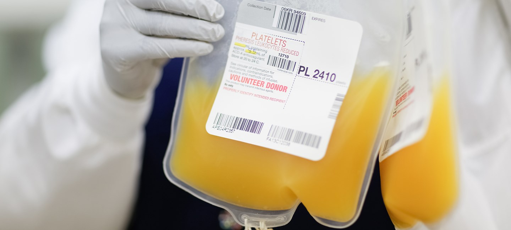

Blood donation is a voluntary procedure that can help save the lives of others. There are several types of blood donation, which help meet different medical needs.
This is the most common type of blood donation, during which you donate about a pint of whole blood. The blood is then separated into its components — red cells, plasma, platelets.
Apheresis During apheresis, you are hooked up to a machine that can collect and separate blood components, including red cells, plasma, platelets, and return unused components back to the donor.Today, most medical care depends on a steady supply of blood from donors, as one in seven people entering the hospital need blood. For Moffitt, as cancer care increases, so does the demand for blood and platelet donations. An adequate amount of blood is needed in all health care facilities to meet the urgent need for patients facing trauma and other lifesaving procedures, such as blood transfusions – which saves millions of lives each year. Donating blood is a simple procedure that can be done within an hour. To donate blood in your local community visit www.lifesouth.org or www.scbb.org.